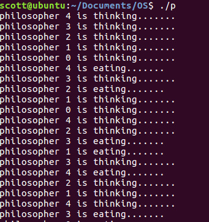
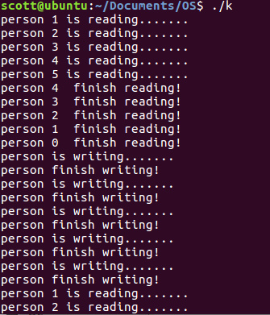

本文介绍多种同步方法来解决进程间通信问题，并给出模型的代码实现。
代码介绍
本文主要侧重于代码实现，若对互斥（mutex）以及死锁问题还不够熟悉，可以参考我这篇文章。
include <pthread.h> - pthread_mutex_t - 用于创建互斥（mutex）变量 - pthread_mutex_lock - 用于对互斥加锁，防止其他进程（线程）进入临界区。 - pthread_create - 用于创建临界区 - pthread_t - 标识线程```
include <semaphore.h> - sem_t - 用于创建信号量变量 - sem_init - 信号量初始化函数 - sem_wait - 相当于Dijkstra的down操作 - sem_post - 相当于Dijkstra的up操作
哲学家进餐问题
引言
对于问题的描述不过多介绍，可参考wiki。
最naive的想法就是哲学家先取左叉子，再取右叉，最后再依次放回就行。但很遗憾这种想法会造成死锁。想象一下：若在同一时刻所有的哲学家都同时拿起左叉，那他们再也拿不到右叉，导致程序在一直运行却又无法进行下去。
因此，我们很容易想到利用互斥（mutex）进行改进。我们将哲学家进餐的一系列动作都lock起来，这样的确能避免死锁，但这样也会导致同一时间只有一个进程在进餐（资源浪费），有没有更好的方法呢？
我们知道，若有n个哲学家，则最多n/2个哲学家同时进餐。我们可以首先利用mutex将取叉的动作lock住，同时检查周围的人是否正在进餐。这样，我们就需要一个数组来标识每个哲学家的状态。最后，我们把动作分解为take_forks,eat,think,put_forks四个状态，其中需要特别注意take_forks和put_forks。
代码
#include <stdio.h>
#include <pthread.h>
#include <unistd.h>
#include <semaphore.h>
#define N 5
#define LEFT (i - 1 + N) % N
#define RIGHT (i + 1) % N
#define THINKING 0
#define HUNGRY 1
#define EATING 2
int state[N];
pthread_mutex_t mutex = PTHREAD_MUTEX_INITIALIZER;
sem_t s[N];
void think(int i)
{
if (state[i] == THINKING)
{
printf("philosopher %d is thinking.......\n", i);
sleep(3);
}
}
void eat(int i)
{
if (state[i] == EATING)
{
printf("philosopher %d is eating.......\n", i);
sleep(3);
}
}
void init()
{
int i;
for (i = 0; i < N; i++)
{
if (sem_init(&s[i], 1, 1) != 0)
{
printf("sem_init is wrong\n");
}
}
}
void test(int i)
{
if (state[i] == HUNGRY && state[LEFT] != EATING && state[RIGHT] != EATING)
{
state[i] = EATING;
sem_post(&s[i]);
return;
}
}
void take_forks(int i)
{
pthread_mutex_lock(&mutex);
state[i] = HUNGRY;
test(i);
pthread_mutex_unlock(&mutex);
sem_wait(&s[i]);
}
void put_forks(int i)
{
pthread_mutex_lock(&mutex);
state[i] = THINKING;
test(LEFT);
test(RIGHT);
pthread_mutex_unlock(&mutex);
}
void philosopher(int i)
{
while (1)
{
think(i);
take_forks(i);
eat(i);
put_forks(i);
}
}
int main()
{
int i = 0;
pthread_t id;
int ret;
init();
for (i = 0; i < N; i++)
{
ret = pthread_create(&id, NULL, (void *)philosopher, i);
if (ret != 0)
{
printf("Create pthread error!/n");
return 1;
}
}
pthread_join(id, NULL);
}
需要注意，我们的test函数只是测试周围的哲学家的状态，若周围哲学家已经在进餐，则不能拿起叉子，只能等待（63行），直到发送信号解除阻塞后才可以进食。
结果

读者-写者问题
引言
哲学家进餐问题对于多个竞争进程互斥的访问有限资源（如I/O设备）这一类问题的建模十分有用，在读者-写者问题中，为数据库访问建立了一个模型。
我们知道，对一个成熟的数据库来说，很重要的一点就是处理多并发请求的问题。在这里我们规定：允许多个进程同时读一个数据库，但不允许读写同时进行，也不允许同时写。
代码实现
#include <stdio.h>
#include <pthread.h>
#include <unistd.h>
#include <semaphore.h>
#define N 5
pthread_mutex_t mutex = PTHREAD_MUTEX_INITIALIZER;
sem_t db; /* control the access of database */
int rc; /* the process want to access the database */
void init()
{
rc = 0;
if (sem_init(&db, 1, 1) != 0)
{
printf("sem_init is wrong\n");
}
}
void read_data(int i)
{
printf("person %d is reading.......\n", i);
sleep(3);
}
void finish_read(int i)
{
printf("person %d finish reading!\n", i);
}
void write_data()
{
printf("person is writing.......\n");
sleep(5);
}
void finish_write()
{
printf("person finish writing!\n");
}
void reader()
{
while (1)
{
pthread_mutex_lock(&mutex);
rc += 1;
if (rc == 1)
sem_wait(&db);
pthread_mutex_unlock(&mutex);
read_data(rc);
pthread_mutex_lock(&mutex);
rc -= 1;
finish_read(rc);
if (rc == 0)
sem_post(&db);
pthread_mutex_unlock(&mutex);
sleep(3); /* wait for another reading ... */
}
}
void writer()
{
while (1)
{
sem_wait(&db);
write_data();
finish_write();
sem_post(&db); /* restore the access */
sleep(5); /* wait for another writing ... */
}
}
int main()
{
int i = 0;
pthread_t id1, id2;
int ret1, ret2;
init();
for (i = 0; i < N; i++)
{
ret1 = pthread_create(&id1, NULL, (void *)reader, NULL);
ret2 = pthread_create(&id2, NULL, (void *)writer, NULL);
if (ret1 != 0 || ret2 != 0)
{
printf("Create pthread error!/n");
return 1;
}
}
pthread_join(id1, NULL);
pthread_join(id2, NULL);
return 1;
}
建模方式与以上类似，但要注意，这个模型有一定缺陷。比如，如果读者的周期小于写者的周期，那么系统将一直允许读者进入，而写者一直被挂起直到没有一个读者为止。这个时候也许就会让写者等待很久。
结果

因此，读者可以自行思考更为合理的建模方式，这种建模方式是根据实际应用需求的，如：
- 读者优先模式
- 写者优先模式
- 严格按照时间戳读写
参考资料
- Operating System:Design and Implementation,Third Edition
- 多线程同步--信号量
- sen_init
- Linux进程间通信——使用信号量
- 哲学家进餐问题的C语言实现